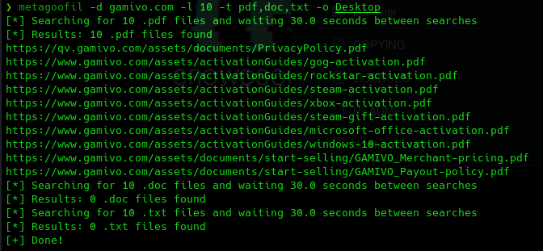

Otras herramientas
Es una herramienta algo más antigua y menos completa que FOCA.
https://github.com/laramies/metagoofil
sudo apt install metagoofil

metagoofil -d dominio -l 10 -t pdf,doc,txt -o Desktop/

La siguiente herramienta es una aplicación web:
https://metashieldclean-up.elevenpaths.com/
Metagoofile no extrae los metadatos de los archivos, para ello debemos usar otra herramienta.
sudo apt install exiftool
exiftool -f *.pdf | egrep -i "Author|Creator|Email|Producer|Templeate" | sort -u
Recorre todos los archivos pdf que tengamos y busca una serie de campos para devolver el resultado.